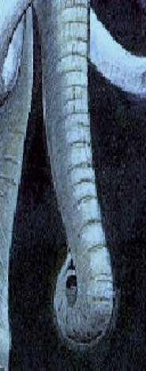

Don Kimball
Elephant’s Trunk
for my daughter and granddaughter
One mammoth snout,
plunked between a whopping pair of tusks,
limber as a shower hose,
yet stout enough to uproot trees and stack
lumber; dainty enough to curl its dactyls
around a school-
girl’s pencil, to draw
sticklike figures, with ease, on legal
pads. Yet bad
enough, if displeased,
to squeeze
the squash out of a bratty
boy or girl, or by
sneezing, cause,
with elephantine schnozzle,
a blast, the cuss
loud enough to trumpet
an intergalactic cataclysm —
a tusker’s typhoonery
heard clear back to its trunk-
less, not-so-elegant
hyraxic ancestors.
Summation
Some things occur for no good reason. Take this:
after years of absence, your only child comes home.
He’s there in the darkness where he’s always been,
and as you step inside the doorway, see
his shadow bounding toward you, it’s easy to
mistake him for a stranger, a man
with rape on his mind; and since you’re packing
what’s meant to give you that needed edge
to deal with threats of mayhem — which,
since Cain and Abel, bedevil men and women —
you reach for it and use it, as you’ve learned
from months of practice. Now, instead
of bottles, cans, those outlines of a man
coming toward you on the shooting range,
this outline of your son
on the kitchen floor.
Don Kimball is the author of the forthcoming chapbook, Skipping Stones (Pudding House Publications 2008). His poetry has appeared in the Edge City Review, The Formalist, Iambs & Trochees, The Lyric, The Blue Unicorn, and various other journals and anthologies. Don won two first prizes and a second prize in national contests sponsored by the Poetry Society of NH in 2007.
|